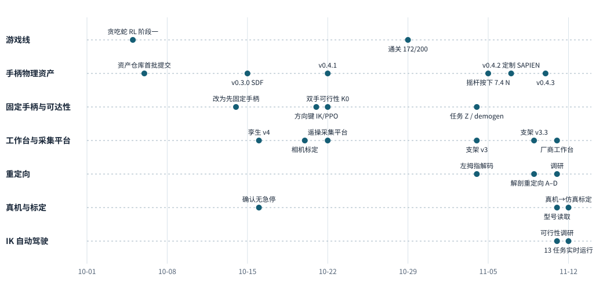

ConCon 中期总结：
让双臂灵巧手操作游戏手柄
本文把 ConCon 各仓库已有的报告串成一条完整的经过：做了什么，为什么做，遇到了什么问题，现在停在哪里，领域内相邻的工作做到哪一步。引用的项目报告都给出位置；公开仓库给出链接，私有仓库写成“仓库名/仓库内路径”。只存在于采集台或计算节点的数据写成 <station>/…、<gpu-node>/…。
摘要。ConCon 研究怎样让两台机械臂和两只五指灵巧手操作一个普通的 Xbox One S 手柄，把游戏策略想按的键真正按出来。硬件是两台 Rokae AR5 七轴机械臂和两只 LinkerHand G20 灵巧手。截至 2026-11-12，项目分成五条已经落地的工作线：
- 游戏线：只通过虚拟手柄、只用强化学习训练贪吃蛇策略，最好的模型在 200 局独立评估中通关 172 局。
- 手柄物理资产：发布到 v0.4.3，三个仿真后端都能让按键、摇杆、扳机被推动并输出手柄信号；按键力和摇杆回中力仍是代表性取值，没有实物标定。
- 固定手柄与可达性实验：左拇指按方向键时，逆运动学（IK）基线的 F1 为 0.9475，叠加强化学习修正后为 0.9453，学习没有带来收益；在要求“无名指和小指扣住手柄背面”的握持约束下，双手全手柄覆盖最多只达到 13/16。
- 采集台与采集平台：仿真工作台现在按厂商标准工作台组装，支持手套和主臂遥操、网页控制、多视角录制和完整性检查，并能把真机关节状态只读镜像到仿真里。
- IK 自动驾驶：不需要人手，按游戏式任务时间轴实时操作手柄。第一轮 13 个任务 75 步成功 64 步（85%），但误触 76 次，主要来自摇杆。
这段时间里反复出现的问题有四类：
- 物理参数缺少实测；
- 资源来源和硬件身份没有一次查清，导致返工；
- “遥操—仿真—真机”三套约定互相耦合；
- 纯位置控制在毫米级接触上不稳定。
领域内已有机器人操作输入设备和机器人弹琴的工作，接触和力控也是灵巧操作的热点，但在我们的检索范围内，还没有工作把同时评测“时间精度、接触力控、手型与换姿代价”的任务定义在一个自带测量的商用人机界面上。我们认为这是 ConCon 最可能的贡献方向。它的主要弱点是仿真参数未经实物验证、基线只有脚本化控制器，以及真机实验还没有开始。
1 项目目标与基本概念
1.1 要解决的问题
人玩游戏时，手柄把手指的动作变成一串带时间的输入：某个键在某一刻按下、保持多久、摇杆推到什么方向和幅度、扳机压到多深。我们想让机器人完成同样的事。上游有一个会玩游戏的策略，给出“现在应该按什么”；下游的机器人用手指把这些输入在实体手柄上按出来；游戏读取手柄的真实输出，决定下一步发生什么。
我们在研究路线文档（2026-10-05 研究路线）中确定了这个分层：游戏策略和实体操作分开训练、分开测量，两边只共享一个手柄目标接口。这样“策略不会玩”和“手没有按出来”可以分开归因。同一份文档也指出，“机器人玩游戏”“机器手按手柄”“灵巧手抓住手柄”各自都已有相邻工作，单独都不能算贡献；问题要从“抓住以后怎样同时操作多个活动控件”开始。
1.2 硬件
采集台上有两台 Rokae（珞石）AR5 七轴机械臂。2026-11-11，两台控制器分别报告型号为 0.8L（左）和 0.8R（右）。两只 LinkerHand G20 五指灵巧手装在机械臂末端，每只手在仿真模型里有 16 个主动关节和 5 个随动关节（按固定比例跟随相邻关节转动），真实手的指令是 0–255 的电机值。手柄是未改造的 Xbox One S（型号 1708）。定制支架（gamepad_fixture v3.3）目前用于仿真场景，实物尚未加工；仿真中手柄固定在世界坐标系上，支架只提供几何与碰撞。人类操作者用 MANUS 数据手套和 LinkerTA 主臂进行遥操。
1.3 后文反复用到的概念
- 手柄信号：手柄每个时刻报告的状态。按钮取“释放/按住”，两个摇杆各有横纵两个轴，取值 −1 到 1；两个扳机取值 0 到 1。游戏线使用 20 维的数组（14 个按钮加 6 个轴）；手柄资产对外使用 32 维的信号格式，其中当前模型实际支持 21 个通道。
- 物理仿真：用物理引擎计算手指与手柄之间的接触、按键下沉和摇杆转动，再按真实手柄的格式输出信号。项目用过三个引擎：SAPIEN（基于 NVIDIA PhysX）、MuJoCo 和 Isaac。
- 逆运动学（IK）：已知希望指尖到达的位置，反求各关节应转多少角度。它是本项目最主要的控制基线。
- 强化学习（RL）：让策略在环境里反复尝试，按奖励更新。项目里的 PPO 是一种常用的强化学习更新方法。
- 遥操与重定向：遥操是人实时驱动机器人。人手和 G20 的尺寸、关节结构都不同，所以要把手套测到的人手姿态换算成 G20 的关节指令，这一步称为重定向。
- 视觉—语言—动作模型（VLA）：读取相机图像和文字指令、直接输出机器人动作的大模型。研究路线最初把 Physical Intelligence 公开的 π0.5 列为主候选，10-14 起暂缓。
- 实时率（RTF）：仿真时间与墙钟时间之比。RTF=1 表示仿真和真实时间一样快；小于 1 时，实时输入会越积越多。
2 时间线总览
图 1 按工作线列出主要事件。我们从各仓库的 git 提交日期和报告日期中取得这些日期。手柄资产仓库在 2026-10-13 改写过一次历史，gamepad_control 在 2026-10-21 以清理后的基线重新开始提交，所以这两条线更早的过程只能从报告和本地私有存档里看到。

2026-11-12-concon-interim-summary_support/make_timeline.py 生成；横轴是日期。读图时注意两点：10 月中旬多条线同时开始；11-09 到 11-12 事件最密集，这是工作台、真机和自动驾驶几条线交汇的阶段。| 阶段 | 时间 | 主要事件 | 对应报告或记录 |
|---|---|---|---|
| 游戏线起步 | 08-28 至 10-05 | 贪吃蛇仓库建立；10-05 完成只用手柄、只用 RL 的第一阶段 | resnake_gym/docs/reports/2026-10-05-resnake-stage-1.html |
| 研究路线 | 10-05 至 10-08 | 确定游戏策略/实体操作分层、π0.5 主候选、自由持握为主任务；调查握持稳定与恢复 | 研究路线、握持稳定调查 |
| 手柄资产 v0.2–v0.3 | 10-06 至 10-15 | 选定视觉模型；20 个活动关节；32 维信号；SDF 和凸分解碰撞；v0.3.0 发布 | 资产阶段报告 |
| 方向调整 | 10-14 | 先在固定手柄上做；暂缓 VLA；先用左手；参考 APRPianist；允许使用人类数据 | 项目决定记录（见 §5.1） |
| 工作台孪生与方向键 | 10-15 至 10-21 | 手柄摆放、孪生 v4、相机标定；固定手柄方向键 IK 与 PPO | gamepad_control/docs/reports/2026-10-21-fixed-gamepad（私有） |
| 采集平台上线 | 10-21 至 10-23 | 双手全手柄可行性 K0；遥操采集平台、网页控制台 | gamepad_control/docs/reports/2026-10-21-two-hand-feasibility（私有） |
| 位置与支架迭代 | 10-23 至 11-05 | 手柄位置多次调整；支架 v3/v3.1；任务 Z 覆盖；demogen；左拇指解码 | gamepad_control/docs/reports/2026-11-04-*（私有） |
| 按键物理与引擎 | 11-05 至 11-10 | 摇杆按下模型；定制 SAPIEN；v0.4.2、v0.4.3；实时性诊断 | 手柄资产 docs/reports/v0.4.2、v0.4.3、2026-11-10-* |
| 工作台独立 | 11-08 至 11-10 | dexhand_workstation 拆出；支架 v3.3；重定向工具；网页手套录制；输入延迟上界 | dexhand_workstation/docs/reports/2026-11-09-*（私有） |
| 真机与自动驾驶 | 11-11 至 11-12 | 厂商工作台；硬件身份；真机只读镜像与标定；IK 自动驾驶；摇杆力控 | 本文 §8、§9 |
3 游戏线：只通过手柄、只用强化学习玩贪吃蛇
游戏线由 resnake_gym 负责，在仓库里与灵巧手线并行推进。它回答上游的问题：一个只能通过手柄输出动作的策略，能不能学会把游戏玩好；它产生的手柄目标长什么样。
任务是 31×20 棋盘上的贪吃蛇，蛇长满全部 620 格记为通关。仓库规则限定了三件事：只用强化学习，不模仿人或规则程序；策略每一步输出一份完整的 20 维手柄报告，游戏读取手柄状态决定蛇的方向；训练时不替策略屏蔽会撞死的动作。实际实验使用一个五选一的动作头，五个选项是“不按”和方向键上、下、左、右，交给游戏的仍是完整的 20 维报告。
阶段总览报告（resnake_gym/docs/reports/2026-10-29-resnake-overview.html，覆盖 10-05 至 10-30，尚未推送）给出的最好结果是：200 局独立正式评估通关 172 局，即 86.0%，95% 置信区间 80.5%–90.1%。报告把提升归到四步，每步都有对照实验：
- 给“不吃东西”加代价，消除原地绕圈；
- 把折扣因子 γ 从 0.99 提到 0.999，并用膨胀卷积扩大网络在蛇头位置看到的范围；
- 把训练加到 6 亿步，约 3.4 亿步时第一次通关；
- 一半训练局从策略自己走到过的中后期局面开始。
报告还记录了两个影响可信度的问题：继续训练时通关率会上下波动约 20 个百分点；原来的训练中评估受执行设置影响，同一权重会得到不同分数。为此作者建立了逐局可复现的确定性评估，所有最终数字都用新的随机种子独立验收。报告最后指出训练目标和验收目标不一致：沿一条经过所有格子的固定回路走必然通关，期望约 9.6 万步；最好的模型通关局只用约 2 万步，但输掉 14% 的局。当前奖励愿意用一定的死亡风险换时间，而验收只看是否通关。用户希望把这条经验迁移到灵巧手线：优先表达“要达到什么”，少调奖励权重。
对灵巧手线来说，游戏线目前只提供方向键目标。gamepad_control 的双手可行性报告写明，ABXY、摇杆、扳机、肩键的目标都由下游自行合成，不能说成来自游戏策略。游戏线与实体手柄的闭环只在仿真里的固定手柄方向键上跑通过（§5.2）。
4 手柄物理资产：从视觉模型到可以按的仿真手柄
手柄物理资产由 xbox_gamepad_physics 维护。它要满足三项要求：手指碰到按键时按键下沉；摇杆转多少就输出多大的信号；手柄与手之间有正确的碰撞。游戏、强化学习和机械臂控制不在这个仓库里实现。资产前半段的工作已写成阶段报告（证据截至 10-11），后半段散在各版本报告中。
4.1 选型、外观、运动学与信号
我们比较多个候选后选定 BatonyRobson 的 Xbox One S 模型（16 个独立部件，CC BY 4.0 许可）。另一个更早的候选在外观特征上更接近 Xbox Series（型号 1914），它的分享键、圆盘方向键和接口外形与目标手柄不符，只作为历史存档。资产为 20 个活动关节定义了统一的运动规格，对外提供 32 维信号格式，可以在关节位置和手柄信号之间双向换算。阶段报告明确写道：所有物理参数都还是估计值，实物标定和灵巧手接触验证都没有完成。
4.2 碰撞体
按键很小，手指和手柄壳体之间的接触必须准确。我们最初把模型修复成体素后按区域切成 3694 个凸块，在诊断和抓取实验后放弃了这条路线，最后收敛为一份 17 个组件、各自封闭的碰撞底模。随后有两种碰撞表示进入构建流程：
- 距离场（SDF）：引擎为每个零件预先计算一张三维网格，记录每一点到表面的距离，接触时直接查表。SAPIEN 3.0.3 支持这种方式，后来成为默认。
- 近似凸分解（CoACD）：把凹形零件近似成若干凸块的并集。参数扫描后，碰撞体超出原形的最大采样距离为 2.42 mm，95% 的外部采样点不超过 1.15 mm。
4.3 三个后端与版本
| 版本 | 日期 | 主要变化 |
|---|---|---|
| v0.2.0 | 10-12 | 历史改写后的首个标记版本 |
| v0.3.0 / v0.3.1 | 10-15 | RoboTwin + SAPIEN 3.0.3 + SDF 的完整控件；附键鼠遥操悬浮夹爪的演示视频 |
| v0.4.1 | 10-22 | 整理公开示例；采集平台开始使用此版本 |
| v0.4.2 | 11-07 | 按键“先按下”模型整合进三个后端；RoboTwin 改为依赖定制 SAPIEN 3.0.3+concon.physx5.6.1.a3 |
| v0.4.3 | 11-10 | RoboTwin 按物理步长选择求解迭代次数；移除 v0.4.2 误带的 17 个构建残留文件 |
MuJoCo 后端使用一个带 SDF 补丁的固定分支（3.16.0+concon.sdf3689.2），Isaac 后端仍是预览状态。定制 SAPIEN 把物理引擎升级到 PhysX 5.6.1 并加入新的摩擦接口；移植的第一阶段在 11-07 通过独立验收（xbox_gamepad_physics/docs/sapien_port_acceptance_20261107.md，未推送）。
4.4 摇杆按下与“两态”信号
11-05，灵巧手线报告“推摇杆时也按下了 L3/R3”。手柄负责人随后决定给摇杆的按下动作建立一个最小模型（调研见 xbox_gamepad_physics/build/experiments/stick_click_research_20261105/REPORT.md，未推送）：
- 静止时有 7.4 N 的预压，弹簧刚度约 1000 N/m，行程 0.4 mm，满行程约 7.8 N。7.4 N 取自代表性摇杆模块 ALPS RKJXV122400R 的规格（容差 ±3 N），不是 1708 手柄的实测值。负责人的裁定是“不用规定的太死，手柄摇杆按钮的行为都大差不差”。
- 按下关节在运动链里排在两个倾斜关节之前，轴向固定在壳体上。摇杆倾斜 θ 时，同样的压力只有 F·cosθ 用于按下，所以倾斜时自然更难按。
- 信号的“按下/未按下”两态应当由物理自然产生。信号和控制代码里不加阈值、迟滞或锁存，只用验收测试检查信号是否呈台阶状。
- 手柄负责人计划把同样的模型推广到所有数字按键；扳机和摇杆倾斜保持连续值。
4.5 实时性：预压让手柄一直“醒着”
采集台需要以接近实时的速度运行仿真。升级到 v0.4.2 后，实时率明显下降。我们在两份报告中定位了原因（dexhand_workstation/docs/reports/2026-11-09-realtime-input-lag，私有；采集台实时性诊断）：
- 摇杆按下的持续预压使手柄一直处于活动状态，物理引擎不会让它休眠；
- 手柄使用较高的求解迭代次数（位置 64 次、速度 16 次）。PhysX 把相互接触或一起处理的物体合批计算，高迭代的成本因此扩散到双臂和双手。
诊断报告的结论是：在测试范围内，没有一个组合能在不引入新退化的条件下满足要求。最后的方案（按步长选择迭代，进入 v0.4.3）是：物理步长 1 ms 时用 10/1 次迭代，4 ms 时用 64/16 次，其他步长取不小于实际步长的最近验证点。在冻结接触的测试中，完整物理步的中位数为 389.7 µs，95% 的步不超过 412.6 µs，但 9000 步里仍有 9 步超过 800 µs 的上限。
4.6 一次“摇杆点亮”的误判
10-13 的一次遥操记录中，手柄被冻结（固定）后，两个摇杆在画面叠加层上同时“亮起”，起初被怀疑是按下。叠加层是遥操画面上的一个虚拟手柄，用来显示仿真手柄的实际信号。调查报告逐帧检查后确认，那是倾斜高亮，不是按下。负责人因此规定：叠加层必须如实反映上游信号，不为了好看调整显示阈值。
4.7 灵巧手推摇杆时为什么会误按（11-12）
IK 自动驾驶（§9）的摇杆误触很多。我们请一个熟悉手柄资产的顾问代理只读源码并做最小实验，主会话核对了其中的数据。结论如下：
- 模型里按下只取决于摇杆受到的、沿壳体向下方向的合力，阈值约 7.55 N。在 5 个作用点上先施加 0–40 N 的侧向力再加竖直力，25 组实验得到的阈值完全相同。侧向力不会被转换成按下。
- 摇杆中心处的回中力矩为 0。竖直压力超过约 2–3 N 时，摇杆会自己倒向一侧。这可能是模型与实物差别最大的地方：实物按 L3 时摇杆不会歪，推测实物在中心有预紧，但还没有实测。
- 误按来自控制方式：拇指用位置控制推摇杆，到达限位后继续推进，多出的位移全部变成几十牛的下压力。§9 继续讨论。
这些实验只用了左摇杆，手柄单独加载；实验脚本和输出暂存在本地临时目录，没有进入任何仓库。
5 固定手柄与可达性：从左拇指方向键到双手全手柄
5.1 为什么先固定手柄
研究路线原本以“双手自由持握手柄”为主任务，固定手柄只作对照，并且只用强化学习、不使用示范。2026-10-14 用户调整了方向：先把手柄固定住，暂缓 VLA，第一阶段只用左手，参考 APRPianist 的做法，即用 IK 给出基础动作、强化学习只学一个小的修正量，再加入来自人类动作的风格约束；同时允许使用人类数据作为奖励先验。10-08 的握持稳定调查为这条路线提供了依据：PianoMime 报告示范轨迹加 IK 直接执行 F1 为 0.72，完整方法为 0.94 [1]。
5.2 左拇指方向键：IK 与强化学习
gamepad_control/docs/reports/2026-10-21-fixed-gamepad（私有）在 MuJoCo 里让 G20 左拇指在固定手柄上按方向键：手臂焊接在一个固定姿态，手指保留动力学；控制器只知道当前目标，游戏读取手柄关节编码后的信号。结果：
| 控制器 | 三个评测序列的平均 F1 | 说明 |
|---|---|---|
| IK 基础动作 | 0.9475 | 信号精确率均为 1.000 |
| IK + PPO 修正，三个训练种子 | 0.9409 / 0.9475 / 0.9475；均值 0.9453，样本标准差 0.0038 | 每个模型评测 3 个序列 × 500 个控制步 |
这里的 F1 同时衡量误按和漏按：精确率是实际按下的键中符合目标的比例，召回率是目标键中实际按下的比例，F1 是两者的调和平均。10 个游戏闭环窗口共 2800 个采样时刻，实际手柄报告与理想执行完全一致。随后的审计发现，种子 1 和 2 每一步的方向键状态都与 IK 完全相同，学习到的修正量没有改变计分行为。我们在这个窄任务上的结论是：可靠的 IK 先验已经够用，强化学习没有带来收益。这是逻辑时间仿真，运行速度慢于实时。
5.3 握持约束让双手全手柄长期不可行
下一步是双手操作全部控件。用户当时给定了硬约束：每只手只有一个固定掌位；拇指负责摇杆、方向键或 ABXY，食指负责肩键，中指负责扳机；无名指和小指始终贴住手柄背面。在这些约束下：
- K0 可行性（K0、任务 Z 等是项目内部的任务编号；
gamepad_control/docs/reports/2026-10-21-two-hand-feasibility，私有）：每侧搜索 4096 个固定掌位，加入握持、指定手指、臂 IK、碰撞和接触检查后，左手没有控件通过，右手只有 Y 键。报告注明这只是有界搜索的结果，并建议先做可调的试验夹具。 - 手柄位置与支架反复调整：10-23 至 11-03，手柄在采集台上移动了多次（桌面远端、立柱边、肘部 90° 可达位置、相机视野内的自然握姿位置），支架从 v3 改到 v3.3（gamepad_fixture，公开 CAD）。
- 任务 Z（
gamepad_control/docs/reports/2026-11-04-reach-coverage，私有）：把“理想臂姿”改为“自然姿态范围”后，现实口径下最好的点位两手合计 13/16 个控件，严格口径 10/16。报告同样声明这是有界搜索中找到的最大覆盖。
2026-11-11，用户在已经有完成度较高的支架后，取消了“手指必须扣住背面”的约束：“只要 work，就算姿势怪异也行”，并允许手臂配合。同日的可行性研究（intent-ik-2026-11-11/report.md，本地）在 v3.3 场景下纯运动学计算：手臂停在初始姿态只动手指，0/16 个控件够得到；每个控件单独做一次手臂 IK，16/16 都够得到，五根手指都可以用。也就是说，此前的瓶颈主要来自“共同握姿 + 背面握持 + 掌位限幅”的组合约束。
5.4 示范扩增 demogen
gamepad_control/docs/reports/2026-11-04-demogen-framework（私有）实现了从已录制示范生成新轨迹：按控件切片，在手柄坐标系下迁移掌位和指尖参考，重新解手臂 IK，拼接后用采集后端做物理回放筛选。正式试跑 3 个新位姿，保留 2 条，拒绝 1 条。被拒绝的那条信号和 IK 都正确，只是某一瞬间手指与方向键的几何负距离达到 315 µm，超过预先固定的 30 µm 门限。报告用“原位恒等回放”作对照：未经任何迁移的原始纯运动学源在原位就已失败，从而排除“换位姿导致失败”的解释。demogen 目前只有方向键源示范，并且只支持 0.4.1 版手柄。
5.5 纯强化学习能否替代 VLA
同日的调研（gamepad_control/docs/reports/2026-11-04-pure-rl-dexterous-vla，私有）的结论是：在目标明确、范围受限的灵巧操作上，强化学习可以做到很强的控制，也有真机先例；但没有证据支持“从零纯强化学习能以相近成本得到通用 VLA 的全部能力”。它把“多任务与语言条件、视觉泛化、灵巧精度、长时序、真机迁移”分成五种不能互相替代的能力，后续评测需要分别验证。
6 采集台孪生与采集平台
灵巧手线需要一个与真实采集台尽量一致的仿真工作台：它既是遥操时操作者看的画面，也是将来视觉数据和自动生成数据的来源。这条线从 gamepad_vla 起步，2026-11-08 起独立成 dexhand_workstation（私有），11-11 原仓库收窄为只做手柄自动控制的 gamepad_control。
6.1 孪生 v4 与相机标定
10-16 的孪生 v4 报告（gamepad_control 本地私有存档 2026-10-16-station-twin-v4）写明：代码、规范和运行门槛通过，但“仿真相机与真实相机绝对位姿一致”没有做到，三台相机的关键点误差都超过目标，因此不能称为高保真数字孪生。用户当时纠正了我们的一个判断：仿真相机位姿必须与真实相机一致。
随后我们发布了 A3 可打印的 ChArUco 标定板（棋盘格中嵌入可识别编号的方形标记，便于自动找角点）及工具（calib_board），10-20 用三个摆放位置联合标定立柱顶上的主相机：60 个角点，联合重投影误差中位数 2.056 像素，95% 的点不超过 4.681 像素。10-21 起场景直接使用这组外参。
6.2 遥操采集平台
10-22 用户确定了采集平台的架构：
- 同时支持 SAPIEN 和 MuJoCo 后端，轨迹用一套与后端无关的格式记录；
- 双手用 MANUS 手套、双臂用 LinkerTA 主臂遥操；右手按左手镜像处理（厂商开发者确认）；
- 这一轮只采集参考轨迹和姿态，不采集贪吃蛇实际游玩；仿真画面叠加一个虚拟手柄，显示仿真手柄的实际信号；
- 使用自定义的 episode 格式（一次从开始到停止的录制为一个 episode），另提供导出到 LeRobot（Hugging Face 的机器人数据格式）的工具；
- 只在仿真模式下运行手套、重定向和主臂节点，不启动会让真实手和机械臂动作或上电的节点。
同日平台在采集台通过仿真模式验收：ROS 2（机器人常用的进程间通信框架）输入无损记录原始值，画面 58 fps。网页控制台按“极简”原则设计，用户否决了录制中的动作提示、逐关节对比条、接触警告等内容，保留画面、实际信号叠加、通道健康、录制状态和停止后的自动完整性检查。11-09 至 11-12 又陆续加入多个辅助视角、一键录制原始手套数据并在同屏大字提示、遥操数据表、英文界面、仿真/真机模式开关（真机一侧尚未启用）。
6.3 实时输入的积压
dexhand_workstation/docs/reports/2026-11-09-realtime-input-lag（私有）发现旧实现把“接收时间减会话起点”直接当作仿真时间。仿真只有 0.8 倍实时时，墙钟每过 1 秒就多积压约 0.2 秒输入，50 秒后积压约 10 秒。修改后，每个物理步之前读取各通道最新的目标，接收超过 100 ms 的目标不再应用，但原始消息全部保留在日志里；回放仍按记录的仿真时刻逐事件执行。100 ms 是“接收到的目标有多新”的上界，不是手指实际到位的延迟。
6.4 用厂商标准工作台重建场景
11-11 我们发现灵心巧手（LinkerBot）公开的 linker-sim-assets 仓库里有完整的标准工作台：左右两种 AR5 0.8 机械臂、L25 手、桌子与立柱，以及双臂双手的整机装配。项目 10 月就找到过这个仓库，但只固定了其中的右臂版本，并误以为两台都是 0.8R；11-11 控制器自报型号后才确认左臂是 0.8L。
在用户要求“尽可能用厂商值”后，场景改为“厂商基线 + 明确记录的偏差”（提交 b9db609、f8701f4）。偏差只有几项：手臂安装角沿用原工作台给出的数值（原工作台作者用真机做过测试，等我们自己的真机实验发现问题再改）；手部使用与真实 G20 几何一致的模型；支架和手柄沿用我们自己的 v3.3 层。用户实测确认立柱 60 mm、桌板 15 mm，与厂商模型一致，而我们早期自己建模的桌板厚度是错的。测试要求组装结果可以从基线和偏差文件逐字段复现。
手的外观按真实 G20 的照片分成五种材质，独立发布为 g20_pbr_description（只改视觉网格和材质，运动学、惯量和碰撞网格保持厂商原样）。
6.5 部署方式
我们只通过 Git 提交部署工作台：本地提交并推送后，部署脚本把同一提交传到采集台检出，服务状态接口报告正在运行的提交号，要求本地、GitHub、部署目录和运行中的服务一致。私有站点配置不进入 Git。工作台也明确与原工作台解耦：功能不依赖原工作台的节点或话题，需要的资源以带来源记录的副本维护在自己的目录里。
7 重定向：把人手动作换算成 G20 指令
遥操链路是：MANUS 手套每只手报告 25 个节点 → 重定向节点以 60 Hz 输出每只手 20 路 0–255 的电机值 → 采集平台把电机值解码为 G20 关节角 → 仿真执行。G20 比人手大很多，手指的关节结构也不同，重定向决定了操作者的意图能否传到 G20 的指尖上。
7.1 左拇指的反复修正
左手拇指相关电机的方向被反复修改：10-23 先翻转了拇指旋转电机又撤回；同日把左手 5–9 号侧摆电机改为沿用右手方向；11-04 又改回“与采集台编码器互逆”的解码（gamepad_control 提交 deb26ef、e2148ed、5c1431b、c6165ef）。这条记录说明，单看仿真画面很难判断约定是否正确，需要真机对照。§8.3 最终用真机姿态确认，5 号电机（拇指根部侧摆）的真实约定与遥操解码相反。
7.2 四种重定向方案
dexhand_workstation/docs/reports/2026-11-09-anatomical-retarget（私有）中，我们首先核对了 MANUS 官方文档的关节命名，发现 SDK 里名为 MCP 的节点实际是掌骨根部，名为 PIP 的节点实际是掌指关节，原有两套映射都在多处把骨段对错了位置。报告保留原行为作对照，共提供四种方案：
- A：原有映射（默认）；
- B：原工作台中另一套基于 Wuji 关键点的映射；
- C：修正关节对应关系后的 B；
- D：按 AnyTeleop 的向量优化框架，让 G20 上若干指尖/关节向量的方向与人手一致，再加入 DexPilot 的捏合项：两指在人手上足够接近时，强制 G20 对应指尖也闭合 [2][3][4]。
用户目前只实测过默认的 A。
7.3 两条支线的调研结论（11-11）
用户提出两条支线：线 1 继续改进直接映射；线 2 在仿真里放一只与操作者等尺寸的虚拟人手，先让虚拟手接触手柄，再从接触解出 G20 的动作。调研报告（retarget-survey-2026-11-11/report.md，本地）的结论：
- 线 1：以 D 为主干。G20 右手拇指与其余四指指尖的最小可达距离都在 0.1 mm 以内，捏不拢的原因不在够不着，而在投影权重、按人手比例设定的阈值、用指尖原点代替指腹表面，以及仿真端的跟踪误差；学习式方法（如 GeoRT [5]）放在第二梯队。
- 线 2：离线方法（ManipTrans、DexMachina、SPIDER [6][7][8]）默认“人手接触了物体”，因为那些数据里人真的摸到了物体；遥操时操作者手里没有手柄，虚拟手的接触不能代表意图。调研建议改为在 G20 几何上直接做接触修正层，思路来自力反馈渲染中的“代理点”方法：真实目标可以穿入物体，代理点停在表面上 [9]。
用户随后指出，操作者可以手握一个实物手柄。这把问题变成“用实物手柄的按键作为意图，再由 IK 生成手指动作”，也就是 §9 的起点。
8 真机：身份、安全与真机到仿真的标定
到 2026-11-12 为止，我们没有让真实机械臂或灵巧手执行任何学习得到的动作。真机工作只有三类：只读查询设备状态、在用户逐次授权下把双手设为张开姿态、把真机状态只读镜像到仿真。所有涉及硬件的查询都需要用户单独授权。
8.1 硬件身份
- 机械臂：两台控制器自报型号为 AR5-5 的 0.8L（左）和 0.8R（右），与厂商仓库的两种变体对应。在 q=(0, 90°, ±90°, 0, 0, 0, 0) 时，控制器报告的法兰位姿与厂商模型正运动学结果一致。
- 灵巧手：通过灵巧手使用的 CAN 总线发送只读查询，读取到的序列号和结构版本对应 G20。仿真使用的几何与公开 L25 模型逐字节相同；厂商解码配置注明 G20、L20、L25 为同一硬件。厂商仓库里的 L25 有几处关节参数（拇指根部俯仰原点、左手四指侧摆轴方向、远节随动比例、限位）与公开模型不同，目前还没有评估采用哪一组。
8.2 安全现状
10-16 我们确认采集台没有物理急停按钮，还发现原工作台的“只读”状态节点在初始化时会给两台机械臂上电，节点退出后机械臂保持上电。此前我们只读了节点源码，没有追到控制器构造函数，判断有误，这条教训被记录下来：判断进程是否只读，要追完整的初始化路径。
11-11 的只读查询进一步确认：两台控制器背面安全接口中的外部急停和安全门输入都被短接；控制器软限位已启用；工具负载设置为 0 kg，没有计入 G20 的重量。右侧控制器自 10-22 起有一个内部通信故障，用户重启控制柜后消除。用户的立场是：没有外部急停是厂商交付状态，改造很麻烦，实验仍要继续。我们把补偿措施列入真机模式的设计要求：页面停止按钮、可直接断电的位置、在控制器中填入 G20 负载后开启碰撞检测、限速、输入中断时停止、启动时缓慢接近当前位置，以及分阶段的低速验证。
8.3 三套约定与真机到仿真的标定
用户指出项目实际上有三套约定：遥操、真机、仿真。遥操到仿真此前已经标定（场景中的手臂安装角、主臂映射、手部解码）。11-11 新增的“Real robot”信号源把真实机械臂关节角（通过厂商 SDK 只读读取）和灵巧手电机位置（CAN 只读查询）镜像到仿真里，用于直观比较仿真与真机。比较时发现两处不一致：
- 双臂高度：真机两臂略微下垂，右臂比左臂高一点；仿真中右臂比左臂高很多。
- 左手拇指：电机值为 0 时，真机左拇指横过掌心，与厂商解码规则一致；按遥操解码在仿真中则竖起。
场景里没有可以直接测量的参照，用户提出用卷尺从桌子前沿下表面竖直拉到机械臂末端关节外壳顶面。我们按机械臂网格反解：在两臂七个关节角都处于 q=(0, 90°, ±90°, 0, 0, 0, 0)（手臂向前平伸）时，读数 500 mm（左）和 520 mm（右）对应绕第一关节分别转动 −84.10° 和 +85.85°（相对厂商安装），卷尺读数 ±5 mm 约对应 ±0.44°。第一次测量时卷尺没有垂直，左侧读到 480 mm；我们按模型画出预测接触位置后，用户把卷尺拉垂直复测，读数和位置都与模型一致。
如果直接改场景安装角，会破坏已经标定好的遥操到仿真。最终的做法是把真机到仿真的换算放在 Real robot 信号源里（提交 e5fc144）：第一关节角加偏移，左 +5.90°、右 −19.15°（等于实测转角减场景安装角）；左手第 5 路电机值先取 255−m 再按遥操规则解码。我们数值验证过，绕第一关节旋转底座与给第一关节加偏移在所有姿态下等价。标定文件写明对应的场景名，场景变化时信号源拒绝启动；测试要求偏移等于实测转角减场景安装角。用户在只读镜像模式下的目测复核还没有完成。
这次标定也揭示了一个尚未处理的事实：在遥操约定下，真机实际姿态会与仿真显示的姿态相差上述偏移，左拇指侧摆方向也相反。下一阶段的真机模式需要用这份标定的逆变换下发指令，让同一份遥操输入在真机和仿真上得到同样的姿态。
9 IK 自动驾驶与评测雏形
9.1 为什么要“不用人手”
遥操采集依赖操作者，而且重定向还有缝隙。11-11 的可行性研究（intent-ik-2026-11-11/report.md，本地）比较了三种模式：用实物手柄按键作为意图、由 IK 实时生成手指动作；手套给姿态、实物手柄给意图的混合模式；完全自动生成。IK 单次求解中位数 1.3–2.8 ms，足够实时。报告推荐以全自动生成为主，同时做意图驱动的小原型。11-12 用户要求直接做一版：生成像玩家一样的组合操作任务，用自动 IK 以实时帧率在仿真平台内完成，并用网页相同的会话和录制结构在采集台上录下来。
9.2 做法
- 任务集：13 个任务、75 步，一轮约 106 s，任务之间留 3.5 s 给手臂换姿态。覆盖菜单导航、长按、连按（最高 5.6 Hz）、边推左摇杆边按 ABXY、L3/R3 点击、双摇杆、扳机加摇杆瞄准、肩键切换和双键同按。每一步写明控件、手、手指、动作、开始时间和持续时间。
- 新输入来源：与遥操、回放并列，按仿真时钟进入同一条运动链，使用与遥操相同的限速和量化，不改增益和映射。来源标识和任务标签写在已有字段里，数据格式不变。
- 姿态与 IK：每只手有 3 个游戏姿态（方向键或 ABXY、摇杆、肩键加扳机）。我们先离线搜索候选姿态，检查手指可达、手与手柄不碰撞、两手不越过中线、进场路线无碰撞，再在采集台的物理仿真里实测挑选。运行时每个控制周期按实测掌根位姿重解手指 IK。按键动作分为“悬停 6 mm → 接触 → 压到行程再深 1.2 mm → 保持 → 释放”；摇杆先让拇指落进摇杆帽顶部的凹陷（下称帽碗）再倾斜；扳机按行程比例拉。
- 判定：用手柄物理资产输出的信号判断每一步是否生效，统计成功、误触（非目标控件被触发）和按下延迟。
9.3 第一轮结果（已复核）
执行代理在采集台上用无界面浏览器打开网页，选择这个输入来源，然后点击开始、录制、停止。录制的 episode 有 6406 行、106.8 s，完整性检查三项全部通过；录制期间平均实时率 1.02，最低 0.71。主会话核对了 episode 的元数据和完整性记录。代码已合并进 dexhand_workstation 主线（提交 88ca7fc），任务集文件为 configs/autopilot/game_combos_v1.json，录制保存在 <station>/gamepad_vla_data/ik-autopilot/web/…。
| 操作类别 | 成功 | 按下延迟中位数 / 最大值 |
|---|---|---|
| 单键点按 | 13/13 | 66 / 67 ms |
| 长按 | 3/3 | 67 ms |
| 连按 | 10/10 | 64 / 70 ms |
| 方向键 | 9/9 | 67 ms |
| 肩键 | 8/8 | 50 ms |
| 扳机 | 9/11 | 50 / 533 ms |
| 摇杆倾斜 | 11/17 | 66 ms / 1.77 s |
| L3/R3 点击 | 1/4 | 50 ms |
| 合计 | 64/75（85%） | — |
误触共 76 次：R3 45 次（主要在双摇杆任务中推摇杆时误按）、RT 18 次、RB 7 次、L3 3 次、LT 3 次；按键和方向键类任务误触为 0。每个控制周期两只手一起求 IK，中位数 4.5 ms。这只是一次运行，控制器是脚本化的，统计量没有置信区间。
9.4 暴露的三个问题
同一只手不能同时推摇杆和按扳机。在搜索条件下（拇指管摇杆、食指或中指管扳机、手与手柄零接触、两手不越过中线），能同时够到两者的握法会让 G20 手掌嵌入握把 7–9 mm；物理仿真中接触力约 240 N。我们在第一版中因此把“按住右扳机 + 右摇杆瞄准”改成用左摇杆瞄准。用户指出这只是搜索条件下的结论，并且“手大、够不到”正是研究价值所在，要求保留原组合并如实记为失败，同时放宽条件重新搜索：手指自由分配、允许限力接触、增加侧面和下方进场。第二轮放宽搜索仍没有找到满足条件的姿态，最接近的解手掌嵌入约 9–10 mm（执行代理的搜索结果，搜索在采集台上运行）。这同样只是有界搜索的结果。
换姿态慢。任务需要的控件变化时，手臂要沿进场线退出、移动、再下降，约 1–3 s，少数步最多晚到 1.8 s。用户在一开始就预见到关节限速会带来这种延迟，并提出把它设计成评测指标（§9.6）。
摇杆误触。结合 §4.7 的顾问实验，原因有三层：一是拇指用位置控制，接触后再压深 0.3 mm 已经超过触发按下所需的约 0.2 mm；二是推压方向跟着帽子一起转，倾斜到 23° 时约 92% 的推力朝下；三是摇杆本身领先指令约 5°，到达限位后多余的位移全部变成几十牛的下压力。用户补充了一个判断：人推摇杆时用帽顶凹陷加摩擦平行推动，误触可能来自“接触后朝一个方向平移、挤压进摇杆”。我们据此把问题重新表述为接触与用力：法向控制力，切向沿以支点为圆心的圆弧推进。
9.5 第二轮摇杆实验（截至 11-12 晚）
以下数字来自执行代理的实验报告，分支 feature/ik-sticks（提交 11f6ad0，已合并进主线并部署）。主会话核对了该提交的测试（445 项通过）、部署后服务运行的提交号，以及整轮网页录制的完整性检查（通过，6954 行、115.9 s）；各类成功率和误触次数由执行代理的评估模块统计，主会话没有从原始数据重新计算。
| 方案（同一套摇杆任务） | 左摇杆倾斜 | 右摇杆倾斜 | 有意点击 | 主要误触 |
|---|---|---|---|---|
| 帽碗拖动（位置控制） | 14/16 | 11/16 | 4/4 | R3 9 次 |
| A：推帽子侧面、水平推 | 1/16 | 0/16 | 2/4 | L3 14、R3 25、其他 22 |
| B：帽碗 + 法向力闭环（目标 1.5 N） | 14/16 | 12/16 | 4/4 | R3 7 次 |
执行代理把方案 B 选为默认。左手倾斜阶段实测法向力的中位数为 1.6 N（目标 1.5 N）；右手的修正量打到上限后，90% 分位的接触力仍有 57 N，说明右拇指在帽上的接触方向不在力闭环能控制的方向上。按正运动学计算，G20 拇指每个电机档对应指尖移动 0.34–0.62 mm，大于摇杆按下的 0.4 mm 行程：在这个指令分辨率下，纯位置控制无法稳定地“轻轻压着”。整轮 14 个任务（含如实记为失败的同手组合）的网页录制为 68/80，误触 28 次，平均实时率 1.05。
9.6 评测指标的设计方向
用户提出把“按时间轴完成按键序列”的表现做成评测指标，并且不加过多约束，例如现实中也有人单手竖着握手柄。我们查了相邻工作的评分方式（§11），整理出下面的设计方向，规范文本尚未写成：
- 任务表示：时间轴上的事件，每个事件包含控件、目标状态、开始时间和持续时间，摇杆和扳机另带方向和幅度。
- 判定只看手柄信号：不约束握法和手指分配，只要求物理上成立（不穿模、接触力有上限）。
- 事件匹配：目标事件与实际触发一对一匹配（每个目标事件最多对应一次实际触发），起始时间允许一个容差窗，参照音乐转录评测的默认 ±50 ms，并同时报告 50/100/200 ms 三档。
- 核心指标：漏按率（未匹配的目标事件比例）、误触率（未匹配的实际触发比例，另报每分钟次数）、起始延迟的中位数和 90% 分位、长按期间的保持质量、摇杆方向和幅度误差。
- 换姿代价：按“前后两个事件是否需要换手指、移手、移臂”分组报告延迟；对任意两个控件 A→B 逐步缩短间隔，记录成功率仍不低于 90% 的最短间隔，组成转移矩阵；把“提前多久告知下一个事件”作为横轴，从完全反应式到整段已知。
- 接触与用力：接触力分布、法向力能否稳定在目标范围、指令分辨率造成的限制，作为单独的一组指标。
10 反复出现的问题与教训
| 问题 | 具体表现 | 我们现在的做法 |
|---|---|---|
| 物理参数缺少实测 | 按键力、摇杆回中、摩擦系数都是代表值或假设；G20 真实出力只找到控制参数对应的电流范围（例如拇指基座 400–700 mA），没有换算到指尖力的标定；仿真默认的手指驱动没有力矩上限，摇杆轴向力峰值可达 46 N（dexhand_workstation/docs/reports/2026-11-09-l3-force-analysis、…/2026-11-09-g20-force-capacity，私有） | 代表值都带来源和不确定性记录；不把仿真里的力当作真机能力；实测清单列在手柄资产的 待审事项 |
| 资源来源和硬件身份没有一次查清 | 两台臂曾被当作同一型号；L25 与 G20 的关系反复确认；厂商标准工作台 10 月找到但只用了一部分，11-11 才整体采用；桌板厚度早期建模有误 | 以设备自报和铭牌为准；外部资源以带来源记录的副本维护；场景写成“厂商基线 + 记录的偏差”并由测试复现 |
| 约定互相耦合 | 左拇指相关电机的方向反复修改；修改场景安装角会悄悄改变已经标定好的遥操结果 | 区分遥操、真机、仿真三套约定，每条链路单独标定；标定文件绑定场景名，并用测试锁住几者之间的关系 |
| 实时性 | 实时率低于 1 时输入越积越多；手柄预压使整个场景无法休眠，求解成本扩散到手臂 | 只执行最新且足够新的目标；按物理步长选择迭代次数；把性能当作发布前的验收项 |
| 位置控制与毫米级接触 | 0.2 mm 的位置误差就能决定是否误按；指令分辨率大于按键行程 | 在接触方向上控制力，在运动方向上控制位置；把接触力作为评测指标 |
| 搜索结论容易被说过头 | “唯一握法”“不可行”这类说法只在特定搜索条件下成立；过严的握持约束让覆盖率在近三周里最多只到 13/16 | 报告写明搜索空间和失败原因；约束本身作为待验证的假设，可以由用户放宽 |
| 评测本身是否可信 | 贪吃蛇的训练中评估受执行设置影响；方向键上 PPO 的修正量实际没有改变计分行为；demogen 的失败需要排除“换位姿”这一解释 | 确定性评估加独立种子验收；逐步比较学习策略与基线；设置恒等对照 |
| 安全 | 没有外部急停；“只读”节点会上电 | 每次硬件交互单独授权；追完整初始化路径；普通测试从不启动硬件节点 |
11 相关工作
11.1 机器人操作输入设备与游戏
Hubbard 等用全 3D 打印的气动软手，按预先编好的压力序列操作 NES 手柄，通过了《超级马里奥》第一关 [10]。按键顺序是已知的，贡献在流体电路与制造，没有视觉、触觉或学习。T-Dex 用视觉—触觉预训练表征，完成包括街机摇杆在内的五个真实灵巧任务 [11]，但摇杆任务是单手从上方接触固定对象。DexGYS 研究按语言指令抓取包括游戏手柄在内的物体 [12]，停在抓取，不操作控件。GRAB 数据集记录了人手与游戏手柄等物体的接触 [13]，没有控件状态。也有专用软手操作鼠标点击和滚轮的工作 [14]。在屏幕设备上，Yoon 等让 Baxter 机器人玩手机游戏 2048 [15]，See-Control 用低自由度机械臂直接点按手机屏幕，并建立了 155 个任务的评测 [16]，作者也提到延迟仍是挑战。Switch4EAI 和 Switch-JustDance 把 Joy-Con 绑在人形机器人手上跳《舞力全开》，用游戏得分、关节位置误差、完成率和动作平滑度评测全身控制器 [17][18]。ConCon 与这些工作的差别在于：普通商用手柄、双臂五指灵巧手、多种活动控件的组合与时间精度。我们从这些工作中得到两点提示：用设备本身给出客观测量是可行的；游戏得分适合展示，但不足以解释失败原因。
11.2 按时间轴评分的灵巧操作：机器人弹琴
我们认为结构上最接近的是机器人弹琴。RoboPianist 在仿真里让双灵巧手按乐谱弹琴，评分方法是在每个控制步比较全部琴键的开/关状态与乐谱，计算精确率、召回率和 F1，再对所有时间步平均 [19]。PianoMime 从网络视频提取指尖目标，用 IK 给出基础动作，再学习修正，F1 从直接执行的 0.72 提高到 0.94 [1]，这是 ConCon “IK 先验 + 残差”路线的来源。CANTABILE 指出普通的音符 F1 只统计时间对上的音，策略少按也能得高分；它让机器人的每一次击键都参与计分，并要求力度在容差内才算正确 [20]。音乐转录的标准评测工具 mir_eval 用一对一二分图匹配参考音符与估计音符，起音默认容差 50 ms [21]。§9.6 的事件匹配和多档时间窗就借用了这些做法。琴键是一维的，手的横向移动在这些工作中归入协调与规划，没有单独量化换位代价。
11.3 遥操与重定向
DexPilot 用视觉估计人手，并在两指接近时用投影项强制机器人手指闭合 [2]；AnyTeleop 把重定向写成“让机器人上的若干向量与人手对应向量一致”的在线优化，并开源了实现 [3][4]。GeoRT 用学习得到的映射在 1 kHz 下运行 [5]。离线的物理重定向方法（ManipTrans、DexMachina、SPIDER）先得到人手与物体的交互，再在仿真中训练机器人复现接触 [6][7][8]。力反馈渲染中的代理点方法让显示用的代理停在物体表面，不随真实输入穿入物体 [9]，这是 §7.3 接触修正层的思路来源。我们采用了向量优化和捏合项，暂未采用需要每人标定的学习式映射。
11.4 接触与力控
混合力/位置控制是经典方法：在任务坐标系里，约束方向控制力，自由方向控制位置 [22]。近两年的灵巧操作工作把力重新放回学习：DexForce 在示教时测量指尖力，并用力修正动作标签，6 个接触任务平均成功率 76%，不考虑接触力的动作标签成功率接近 0 [23]；ForceVLA 把六维力/力矩作为 VLA 的核心输入，比 π0 基线平均成功率高 23.2% [24]；ReForce 在运动学重定向结果上预测一个残差，使接触力达到人手示范的目标 [25]。HORA 用强化学习加适应模块在真实手上做手内旋转 [26]，说明动态接触控制可以学到。我们遇到的摇杆问题（§9.4–9.5）与 DexForce 的发现属于同一类现象：只给位置的动作在毫米级接触任务上失败。
11.5 评测基准与实时性
TactiDex 是真机触觉灵巧操作基准，把全手触觉与手部运动学、物体状态对齐，并给出标准化指标 [27]（本文只读了摘要）。Bench2Dex 在仿真中跨 12 种灵巧手、26 个双手任务评测 ACT、Diffusion Policy、π0.5 和 GR00T 等方法 [28]。Real-Time Chunking 研究策略推理延迟下的执行，把“包含停顿的真实时间”作为横轴报告进度，并人为注入 100 ms 和 200 ms 延迟观察退化 [29]，这启发了 §9.6 用“提前告知时长”作横轴。上述基准主要报告成功率、完成度和接触指标；在我们的检索范围内，还没有基准同时测量事件级的时间精度、接触力和手型/换姿代价。
11.6 模型与平台
研究路线把 π0.5 列为 VLA 主候选 [30]，10-14 起暂缓。仿真平台使用 SAPIEN [31] 和 MuJoCo [32]；RoboTwin [33] 是手柄资产的主要后端之一。
12 现状与价值评估
12.1 已经站得住的部分
- 可以按的仿真手柄：公开、带版本和来源记录、三个后端可用的手柄物理资产。用户在 10-11 判断它单独不足以投会议，计划作为方法论文的一个小节，另以技术报告留档。
- 工作台和数据通路：与厂商标准工作台对齐的仿真场景、遥操采集、网页控制、完整性检查和 Git 部署，已经在采集台上运行。
- 自带测量的任务：手柄在仿真和真机上都会给出毫秒级、客观的控件读数，不需要人工判定成功，也不需要昂贵的传感器。这一点让“按时间轴完成按键序列”可以成为可复现的评测。
- 已经测到的困难：大手操作小手柄的可达性约束、换姿延迟 1–3 s、毫米级接触下位置控制的失效、指令分辨率大于按键行程。这些都有数据，并且都能转化为评测维度。
12.2 贡献可能在哪里
如果把贡献定位成“灵巧手需要力控”，价值有限，§11.4 的工作已经充分说明了这一点。我们认为更有分量的定位是：用一个自带测量的标准化人机界面，同时评测时间精度、接触力控和手型/换姿代价的基准。DexForce、ForceVLA、ReForce 这类方法可以作为被评测的对象。按键、摇杆、旋钮广泛存在于控制面板、汽车和家电上，手柄是一个到处都能买到的代表，这是回答“为什么是手柄”的主要论据。
12.3 弱点
- 仿真参数未经实物验证：摇杆回中规律、摩擦系数、G20 指尖刚度都是假设或未知。
- 基线不足：目前只有脚本化 IK 控制器；还没有人类遥操和学习策略的对照。
- 数据初步：自动驾驶只有一两轮运行，没有置信区间。
- 真机实验尚未开始，而真机又没有外部急停。
- “未发现同类基准”只基于有限检索，写进论文前需要系统检索。
13 未解决的问题与下一步
- 评测规范：把 §9.6 写成正式规范（任务格式、匹配规则、指标定义、提前告知档位、转移矩阵测法），并把现有评估模块改为按规范输出。
- 摇杆与同手组合：复核第二轮摇杆实验；右拇指接触方向的问题；同手“摇杆+扳机”在更大搜索空间下是否有解，或作为手型限制如实报告。
- 实物测量：摇杆回中曲线、按键力—行程曲线、摩擦，以及 G20 的指尖力和指尖刚度。前两项决定手柄模型是否需要改变回中规律。
- 真机模式：顶部选项卡切换仿真/真机，切换时先停止前一模式；用真机到仿真标定的逆变换下发指令；先只计算不下发并与只读镜像对比，再低速单关节，最后完整遥操；每一步动真机都需要用户单独授权。
- 基线：人类遥操和至少一种学习策略在同一套任务上的结果；游戏线策略经由实体执行后的性能损失。
- 数据：用真人玩真实游戏时的手柄输入切片作为任务来源，使操作频率和组合符合真实分布。
- 资产一致性：厂商 L25 手部参数是否采用；demogen 升级到当前手柄版本。
附录 A 项目报告索引
“公开”表示文件已在公开 GitHub 仓库的默认分支上；“私有”表示所在仓库不公开；“本地”表示只在工作区中，尚未进入任何仓库。
| 日期 | 报告 | 位置 | 一句话结论 |
|---|---|---|---|
| 10-05 | 贪吃蛇第一阶段 | resnake_gym（公开） | 只经手柄、只用 RL 的贪吃蛇训练基线 |
| 10-05/06 | 研究路线重新评估 | 本目录 | 游戏策略与实体操作分层；π0.5 主候选；评测指标与难度阶梯 |
| 10-08 | 握持稳定与姿态恢复调查 | 本目录 | IK 先验 + 残差有文献依据；握持模块应独立建模（未实验） |
| 10-11 | 手柄物理资产阶段报告 | xbox_gamepad_physics（公开） | 选型、外观、20 关节、32 维信号、SDF/CoACD 碰撞；参数均为估计 |
| 10-13 | 冻结手柄后双摇杆“点亮” | xbox_gamepad_physics（公开） | 是倾斜高亮，不是按下；叠加层须如实反映信号 |
| 10-15/16 | 手柄摆放、拇指方向键可达、孪生 v4 等 | gamepad_control 本地私有存档 | 摆放与初始臂姿；孪生 v4 未达相机精度目标 |
| 10-21 | 固定手柄方向键 | gamepad_control/docs/reports/2026-10-21-fixed-gamepad（私有） | IK 0.9475，PPO 0.9453±0.0038，学习无收益 |
| 10-21 | 双手全手柄可行性 K0 | gamepad_control/docs/reports/2026-10-21-two-hand-feasibility（私有） | 握持约束下左手无控件、右手仅 Y 通过 |
| 10-29 | 贪吃蛇阶段总览 | resnake_gym/docs/reports/2026-10-29-resnake-overview.html（本地） | 200 局通关 172 局；训练目标与验收目标不一致 |
| 11-04 | 任务 Z 控件覆盖 | gamepad_control/docs/reports/2026-11-04-reach-coverage（私有） | 现实口径最多 13/16 |
| 11-04 | demogen 示范扩增 | gamepad_control/docs/reports/2026-11-04-demogen-framework（私有） | 3 个新位姿 2 保留 1 拒绝 |
| 11-04 | 纯 RL 能否达到 VLA 效果 | gamepad_control/docs/reports/2026-11-04-pure-rl-dexterous-vla（私有） | 窄任务可以，通用能力缺证据 |
| 11-05 | 摇杆按下机构与建模建议 | xbox_gamepad_physics/build/experiments/stick_click_research_20261105（本地） | 代表性 7.4 N、0.4 mm，线性预压模型 |
| 11-07 | v0.4.2 发布验收；SAPIEN 移植验收 | v0.4.2（公开）；移植验收（本地） | 按键先按下模型进入三个后端；定制引擎第一阶段通过 |
| 11-09 | 重定向、辅助视角、支架 v3.3、G20 出力、0.4.2 升级、L3 力、输入延迟、网页手套录制 | dexhand_workstation/docs/reports/2026-11-09-*（私有） | 见 §4.5、§6、§7、§10 |
| 11-10 | 采集台实时性诊断；按步长选迭代；v0.4.3 | xbox_gamepad_physics/docs/reports（公开） | 预压使手柄常醒；1 ms 用 10/1 次迭代 |
| 11-10 | G20 外观；遥操数据表 | dexhand_workstation/docs/reports/2026-11-10-*（私有） | 外观后被 g20_pbr_description 取代 |
| 11-11 | 重定向调研；意图 IK 可行性 | 本地调研报告 | 线 1 以 D 为主干；每控件手臂 IK 可达 16/16 |
附录 B 仓库索引
| 仓库 | 在 ConCon 中的角色 | 可见性 | 提交时间范围 |
|---|---|---|---|
| ConCon | 总体文档（本目录） | 公开 | — |
| resnake_gym | 游戏线：贪吃蛇环境与强化学习 | 公开 | 08-28 至 11-04 |
| xbox_gamepad_physics | 手柄物理资产与信号接口 | 公开 | 10-06 至 11-10 |
| gamepad_control（原 gamepad_vla） | 手柄自动控制：固定手柄任务、可达性、demogen | 私有 | 10-21 至 11-11 |
| dexhand_workstation | 采集与仿真工作台、遥操、重定向、真机镜像、IK 自动驾驶 | 私有 | 11-08 至 11-12 |
| gamepad_fixture | 手柄支架 CAD（v3.2–v3.3） | 公开 | 11-07 至 11-09 |
| calib_board | 相机标定板与工具 | 公开 | 10-17 至 10-23 |
| g20_pbr_description | 带材质的 G20 模型 | 公开 | 11-10 |
| SAPIEN（分叉） | 上游 haosulab/SAPIEN 的分支 concon/3.0.3-physx5.6.1-friction：在 3.0.3 上改用 PhysX 5.6.1 并加摩擦接口，产出项目使用的定制 wheel（3.0.3+concon.physx5.6.1.a3） | 见 xbox_gamepad_physics 的 SAPIEN 移植验收报告 | 10 月 |
| MuJoCo（分叉） | 分支 concon/filament-opacity-texture：Filament 渲染器的不透明度纹理补丁，以及构建可移植 wheel 的 CI | — | 10-09 |
| RoboTwin（分叉） | 把 SAPIEN 升级到 3.0.3，作为手柄资产 RoboTwin/SAPIEN 后端的测试平台 | 见 xbox_gamepad_physics 的 v0.4.2 报告 | 10-11 |
| MuBlE（分叉） | 分支 xbox-gamepad-integration：迁移到新的运行环境，并尝试把 Xbox 手柄的 MJCF 位姿接入 Blender 渲染；该尝试当天撤回 | — | 10-09 |
附录 C 复现入口
下表只列各仓库已有的使用说明，命令以说明文件为准。涉及真机、采集台服务或大规模计算的步骤，阅读本文不构成执行授权。
| 要复现什么 | 入口 | 运行位置 | 验收条件 |
|---|---|---|---|
| 手柄资产安装与查看 | xbox_gamepad_physics README 与 Release 附件 | Linux x86_64、Python 3.10 | Release 中的 SHA256SUMS 校验通过；示例能加载并输出信号 |
| 固定手柄方向键实验 | gamepad_control/docs/usage/fixed-gamepad.md（私有） | 计算节点（CPU 物理） | 与报告中的 F1 和游戏窗口一致性对照 |
| 示范扩增 | gamepad_control/docs/usage/demogen.md（私有） | 采集台或计算节点 | 输出 episode 完整性检查通过，新位姿轨迹按门限保留或拒绝 |
| 采集工作台 | dexhand_workstation/README.md、docs/usage/collection.md（私有） | 采集台本机浏览器 | 服务状态报告的提交号与部署提交一致；录制后完整性检查通过 |
| 真机到仿真标定 | dexhand_workstation/configs/workcell/real_robot_calibration.json 与 tests/test_real_robot.py（私有） | 本地测试 | 测试通过：偏移等于实测转角减场景安装角 |
附录 D 术语速查
以下术语都已在正文首次出现处解释，这里只做汇总。
| 术语 | 含义 | 首次解释 |
|---|---|---|
| 手柄信号 | 手柄每个时刻报告的按钮、摇杆和扳机状态 | §1.3 |
| IK（逆运动学） | 由指尖目标位置反求关节角 | §1.3 |
| RL / PPO | 按奖励反复试错更新策略；PPO 是一种常用更新方法 | §1.3 |
| 重定向 | 把人手姿态换算成 G20 关节指令 | §1.3 |
| RTF（实时率） | 仿真时间与墙钟时间之比 | §1.3 |
| SDF / CoACD | 两种碰撞表示：预计算距离场；近似凸分解 | §4.2 |
| F1 | 同时衡量误按和漏按的分数 | §5.2 |
| 混合力/位置控制 | 约束方向控制力、自由方向控制位置 | §9.4、§11.4 |
参考文献
网页均于 2026-11-12 访问。标注“摘要”的条目只核对了书目和摘要；其余读过正文、官方文档或仓库页面。
- [1] C. Qian 等. PianoMime: Learning a Generalist, Dexterous Piano Player from Internet Demonstrations. arXiv, 2024. arXiv:2407.18178
- [2] A. Handa 等. DexPilot: Vision-Based Teleoperation of Dexterous Robotic Hand-Arm System. ICRA, 2020. arXiv:1910.03135
- [3] Y. Qin 等. AnyTeleop: A General Vision-Based Dexterous Robot Arm-Hand Teleoperation System. RSS, 2023. arXiv:2307.04577
- [4] dex-retargeting（开源实现，0.5.0）. GitHub
- [5] Z.-H. Yin 等. Geometric Retargeting: A Principled, Ultrafast Neural Hand Retargeting Algorithm (GeoRT). arXiv, 2025. arXiv:2503.07541
- [6] ManipTrans: Efficient Dexterous Bimanual Manipulation Transfer via Residual Learning. 2025. arXiv:2503.21860
- [7] Z. Mandi 等. DexMachina: Functional Retargeting for Bimanual Dexterous Manipulation. arXiv, 2025. arXiv:2505.24853
- [8] C. Pan 等. SPIDER: Scalable Physics-Informed Dexterous Retargeting. arXiv, 2025. arXiv:2511.09484
- [9] C. B. Zilles, J. K. Salisbury. A constraint-based god-object method for haptic display. IEEE/RSJ IROS, 1995, pp. 146–151. 书目页（摘要）
- [10] J. D. Hubbard 等. Fully 3D-printed soft robots with integrated fluidic circuitry. Science Advances, 2021. PMC8279518
- [11] I. Guzey, B. Evans, S. Chintala, L. Pinto. Dexterity from Touch: Self-Supervised Pre-Training of Tactile Representations with Robotic Play (T-Dex). CoRL, 2023. PMLR
- [12] Grasp as You Say: Language-guided Dexterous Grasp Generation (DexGYS). NeurIPS, 2024. NeurIPS
- [13] O. Taheri 等. GRAB: A Dataset of Whole-Body Human Grasping of Objects. ECCV, 2020. arXiv:2008.11200
- [14] A Robotic Hand with Soft Transmission Systems for Automated Operations of Computer Mouse. Advanced Intelligent Systems, 2025. DOI（摘要）
- [15] W. Yoon, S.-A. Kim, J. Choi. An End-to-End Robot Architecture to Manipulate Non-Physical State Changes of Objects. arXiv, 2016. arXiv:1603.01303（摘要）
- [16] H. Zhao 等. See-Control: A Multimodal Agent Framework for Smartphone Interaction with a Robotic Arm. arXiv, 2025. arXiv:2512.08629（摘要）
- [17] T. Li 等. Switch4EAI: Leveraging Console Game Platform for Benchmarking Robotic Athletics. arXiv, 2025. arXiv:2508.13444（摘要）
- [18] J. Kim 等. Switch-JustDance: Benchmarking Whole Body Motion Tracking Controllers Using a Commercial Console Game. arXiv, 2025. arXiv:2511.17925（摘要）
- [19] K. Zakka 等. RoboPianist: Dexterous Piano Playing with Deep Reinforcement Learning. CoRL, 2023. arXiv:2304.04150
- [20] W. Kim 等. CANTABILE: Learning Expressive Dynamics for Robotic Piano Performance. arXiv, 2026. arXiv:2609.18213
- [21] mir_eval 文档：transcription 模块. mir-eval.readthedocs.io
- [22] M. H. Raibert, J. J. Craig. Hybrid Position/Force Control of Manipulators. Journal of Dynamic Systems, Measurement, and Control, 103(2): 126, 1981. DOI（摘要）
- [23] C. Chen 等. DexForce: Extracting Force-informed Actions from Kinesthetic Demonstrations for Dexterous Manipulation. arXiv, 2025. arXiv:2501.10356（摘要）
- [24] J. Yu 等. ForceVLA: Enhancing VLA Models with a Force-aware MoE for Contact-rich Manipulation. NeurIPS, 2025. arXiv:2505.22159（摘要）
- [25] Y. Wu 等. ReForce: Learning Force-aware Retargeting for Dexterous Manipulation. arXiv, 2026. arXiv:2608.15560（摘要）
- [26] H. Qi 等. In-Hand Object Rotation via Rapid Motor Adaptation (HORA). CoRL, 2022. arXiv:2210.04887（摘要）
- [27] S. Ni 等. TactiDex: A Real-World Tactile-Guided Benchmark for Human-Like Dexterous Manipulation. arXiv, 2026. arXiv:2607.09190（摘要）
- [28] Z. Yang 等. Bench2Dex: Benchmarking Visuo-Tactile Bimanual Dexterous Manipulation Across Dexterous Hands. arXiv, 2026. arXiv:2609.15726（摘要）
- [29] K. Black, M. Y. Galliker, S. Levine. Real-Time Execution of Action Chunking Flow Policies. arXiv, 2025. arXiv:2506.07339（摘要）
- [30] Physical Intelligence. openpi. GitHub
- [31] SAPIEN. GitHub
- [32] MuJoCo. GitHub
- [33] RoboTwin. GitHub